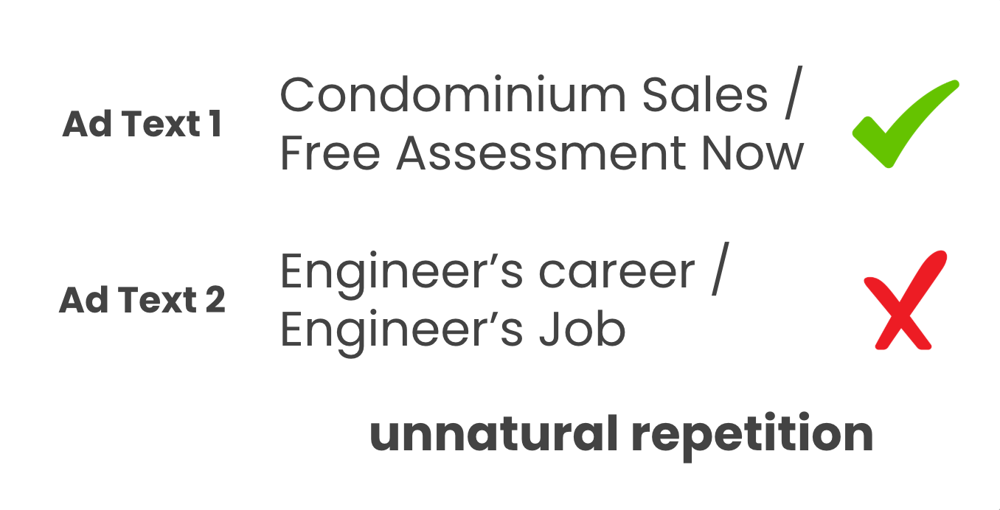

Abstract
As the fluency of ad texts automatically generated by natural language generation technologies continues to improve, there is an increasing demand to assess the quality of these creatives in real-world setting. We propose AdTEC, the first public benchmark to evaluate ad texts from multiple perspectives within practical advertising operations. Our contributions are as follows: (i) Defining five tasks for evaluating the quality of ad texts, as well as constructing a Japanese dataset based on the practical operational experiences of advertising agencies, which are typically maintained in-house. (ii) Validating the performance of existing pre-trained language models (PLMs) and human evaluators on this dataset. (iii) Analyzing the characteristics and providing challenges of the benchmark. Our results show that while PLMs have a practical level of performance in several tasks, humans continue to outperform them in certain domains, indicating that there remains significant potential for further improvement in this area.
Overview
Key Contributions
First Public AdOps Dataset
Constructing the first public benchmark for ad text evaluation based on practical, real-world advertising operations (AdOps).
Comprehensive Benchmarking
Validating the performance of various PLMs and human evaluators, establishing strong state-of-the-art baselines.
In-depth Analysis & Challenges
Analyzing the dataset's characteristics and identifying key challenges to guide future research in the advertising NLP domain.
Tasks
Task Description
The goal is to predict the overall quality of an ad text with binary labels: `acceptable` / `unacceptable`.
Background
As most ad delivery platforms impose text length restrictions, minor grammatical errors are tolerated to enhance readability. However, excessive compression can mislead customers, and such poor-quality ads should be detected before delivery to avoid negative impacts on the advertiser.

Dataset Statistics
Statistical information of data included in AdTEC benchmark
| Task | Train | Dev | Test |
|---|---|---|---|
| Ad Acceptability | 13,265 | 970 | 980 |
| Ad Consistency | 10,635 | 945 | 970 |
| Ad Performance Estimation | 125,087 | 965 | 965 |
| A3 Recognition | 1,856 | 465 | 410 |
| Ad Similarity | 4,980 | 623 | 629 |
Examples
Citation
Please cite our paper when you use this dataset.
@inproceedings{zhang2025adtec,
title={{AdTEC}: A Unified Benchmark for Evaluating Text Quality in Search Engine Advertising},
author={Peinan Zhang and Yusuke Sakai and Masato Mita and Hiroki Ouchi and Taro Watanabe},
booktitle={Proceedings of the 2025 Annual Conference of the Nations of the Americas Chapter of the Association for Computational Linguistics (NAACL)},
year={2025},
publisher={Association for Computational Linguistics},
eprint={2408.05906},
primaryClass={cs.CL},
url={https://arxiv.org/abs/2408.05906},
}Frequently Asked Questions
The AdTEC dataset is the first public benchmark for evaluating the quality of ad text in search engine advertising from multiple, practical perspectives. It aims to provide evaluation criteria based on real-world advertising operations, which have been lacking in previous research.
Currently, the dataset consists of Japanese text only. However, the task design and evaluation framework proposed in this research are language-independent and can be applied to other languages.
The dataset is available on the Hugging Face Hub. The associated code can be obtained from the GitHub repository.
The AdTEC dataset is released under the Creative Commons Attribution-NonCommercial-ShareAlike 4.0 International (CC BY-NC-SA 4.0) license. This requires attribution, non-commercial use, and sharing any derivatives under the same license.